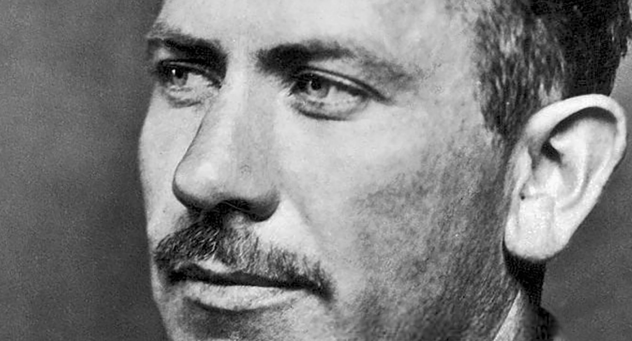

Cuando la casa se
vuelve camión
Luis Flores Romero
Sección: Aula Abierta

Las uvas de la ira (1939),
novela de John Steinbeck, es una sobrecogedora fuente de
reflexión y debate. La historia narra el doloroso recorrido de los Joad, una familia
de Oklahoma que se ve obligada a abandonar su tierra a causa de la Gran Depresión de
los años 30 (evento desencadenado por la crisis de 1929), así como por el Dust Bowl
(crisis climática que produjo grandes sequías y tormentas de polvo).
La familia Joad, al igual que miles de campesinos del este de Estados Unidos,
emprende un complejo peregrinaje hacia California, en busca de nuevas oportunidades;
viaje que se torna casi infernal, donde enfrentan todo tipo de sufrimientos: discriminación, represión,
explotación, escasez económica y persecuciones. Su única casa es un camión, donde
deben acomodar todo su futuro y sus escasas pertenencias.
Este libro toca temas realmente duros. Los lectores somos involuntarios partícipes
de la migración de la familia Joad, por lo que la historia no es en absoluto ligera;
más bien debemos caminar sobre las páginas del libro haciendo varios descansos para
digerir el impacto de lo que allí se narra (también podemos tener una experiencia
auditiva, si optamos por conocer la novela a través de un
audiolibro). Por si fuera
poco, la pobreza y sus complicaciones se incrementa conforme pasan los días. Tienen
muy pocos dólares guardados, que no han de rendir hasta su llegada a California;
los trabajos esporádicos que van hallando en el camino tampoco son la respuesta, ya que
los salarios son en verdad miserables.
Recordemos que la literatura muestra formas de cuestionarnos la realidad. Nos acerca a
problemáticas que podríamos enfrentar (como el difícil viaje de los Joad) o que experimentaron
familiares y conocidos en otros tiempos. Suele ser inevitable saber de alguien que se vio inmerso
en una situación como la de la familia Joad, donde no se cuenta ni con lo básico para subsistir
(comida, techo, vestido). ¿Cuántas personas no se han visto obligadas a abandonar su tierra por
cuestiones económicas, climáticas o de inseguridad? Basta recordar las caravanas migrantes, o
preguntarnos: ¿de dónde vienen nuestros abuelos, bisabuelos, tatarabuelos? ¿Por qué se mudaron
de zona y en qué condiciones? O bien, ¿cuántos familiares y conocidos nuestros viven en Estados
Unidos? Recientemente hemos visto a personas de Haití, Centroamérica o Sudamérica que llegan a
determinados sitios de México en calidad de migrantes; suelen vivir en campamentos improvisados
donde no hay agua ni sanitarios, mucho menos acceso a otros servicios. Situaciones de esta naturaleza
se ven reflejadas en la novela de Steinbeck. Por todo esto, el libro favorece la producción de
reflexiones profundas y críticas sobre nuestro propio entorno.
Otto Dix, Small self portrait, 1913

El capítulo cinco de Las uvas de la ira es uno de los más entrañables y poéticos
de la novela. Se puede leer como un texto autónomo, como un poderoso y lírico
reporte sobre la deshumanización provocada por las máquinas, y la transgresión
de la tierra cuyo culpable es una entidad sin rostro. A través de un simbolismo
conmovedor y bien calculado, nos involucramos en una atmósfera desalentadora,
áspera, casi apocalíptica. Aquí se narra cómo el metálico paso del tractor arrasa
con el vínculo sensible que las personas tienen con la tierra. Por órdenes del
banco (ese monstruo sin rostro), los habitantes necesitarán marcharse lo más pronto
posible; o si no, podrán ser arrastrados por un tractor que en su crueldad mecánica
devora casas y todo lo que tenga en su camino. Por un lado, están los habitantes,
ellos, para reflexionar, se acuclillan y usan como pizarra el suelo polvoriento,
allí trazan ligeras líneas mientras planean qué hacer; por otro lado, el tractor
(nótese la semejanza sonora y semántica entre tractor y destructor) destruye todo
mientras va trazando una profunda y frívola línea recta. Mientras los humanos
acarician la tierra, las máquinas la rasguñan.
En primer lugar, se presenta la imagen de los bancos y las compañías como la de
un monstruo insensible:
Si un banco o una compañía financiera eran dueños de las tierras, el enviado decía: el Banco, o la Compañía, necesita, quiere, insiste, debe recibir, como si el banco o la compañía fueran un monstruo con capacidad para pensar y sentir, que les hubiera atrapado. Ellos no asumían la responsabilidad por los bancos o las compañías porque eran hombres y esclavos, mientras que los bancos eran máquinas y amos, todo al mismo tiempo.
Dorothea Lange, Migrant mother, 1936
Dorothea Lange, Migrant mother, 1936
[…] esos bichos no respiran aire, no comen carne. Respiran beneficios, se alimentan de
los intereses del dinero.
[…] El banco, el monstruo necesita obtener beneficios continuamente. No puede esperar,
morirá. No, la renta debe pagarse. El monstruo muere cuando deja de crecer. No puede
dejar de crecer.
[…] Un banco no es como un hombre, el propietario de cincuenta mil acres tampoco es
como un hombre: es el monstruo.
Algunos párrafos más adelante, descubrimos que ese monstruo tiene una representación
material en los tractores:
Los tractores vinieron por las carreteras hasta llegar a los campos, igual que orugas,
como insectos, con la fuerza increíble de los insectos. Reptaron sobre la tierra,
abriendo camino, avanzando por sus huellas, volviendo a pasar sobre ellas. Tractores
Diesel que parecían no servir para nada mientras estaban en reposo y tronaban al moverse,
para estabilizarse después en un ronroneo. Monstruos de nariz chata que levantaban el
polvo revolviéndolo con el hocico, recorrían en línea recta el campo, atravesándolo, a
través de las cercas y de los portones, cayendo y saliendo de los barrancos sin modificar
la dirección. No corrían sobre el suelo, sino sobre sus propias huellas, sin hacer caso
de las colinas, los barrancos, los arroyos, las cercas, ni las casas.
Y en el siguiente párrafo, descubrimos que el conductor ha sido devorado por el mismo
monstruo, ya es parte de él:
El hombre sentado en el asiento de hierro no parecía humano: con guantes, gafas, una
máscara de goma sobre la nariz y la boca para protegerse del polvo, no era más que
una parte del monstruo, un robot sentado.
Esta cruda imagen parece evocar a La Guerra (Der Krieg) célebre grabado de Otto Dix:

John Steinbeck trabajó como reportero antes de escribir Las uvas de
la ira,
y esa experiencia fue clave para la creación de la novela.
El conductor, narra Steinbeck, ha sido dominado por algo más grande y monstruoso,
ya no es más que un instrumento del tractor estridente:
El trueno de los cilindros retumbaba por los campos hasta ser uno con el aire y la tierra,
de modo que estos murmuraban con vibraciones simpáticas. El conductor no podía controlarlo;
atravesaba el campo en derechura invadiendo una docena de fincas y regresando en línea recta.
Un giro de los mandos podría desviar la oruga, pero las manos del conductor no podían darles
el giro porque el monstruo que había construido el tractor, que le había mandado salir, se
había introducido de alguna manera en las manos del conductor, en su cerebro y en sus músculos,
le había puesto gafas y amordazado, unas gafas en la mente y la percepción, una mordaza en el
habla y la protesta.
La raíz de la palabra humano está emparentada con la de humus (tierra).
Esto ha llevado múltiples veces a pensar que el humano es parte de la tierra. En consecuencia,
el conductor, al estar más cercano a la máquina de hierro que a la tierra, se deshumaniza,
se vuelve de carne y hierro. Peor aún, sólo es hierro incapaz de conmoverse por la tierra:
“No podía ver la tierra tal como era, ni olerla tal como olía, no podía pisar los terrones o
sentir el calor y la fuerza de la tierra. Sentado en un asiento de hierro pisaba pedales de
hierro. No podía aclamar, golpear, maldecir ni animar a esa extensión de su poder y por eso
mismo tampoco podía aclamarse, golpearse, maldecirse o animarse a sí mismo. No conocía la
tierra, no la poseía, no confiaba en ella ni le imploraba”.
¿Existe una deshumanización provocada por los avances tecnológicos? ¿Dejamos de ser sensibles
cuando lo que nos mueve son intereses económicos? ¿Y qué pasa cuando ese replanteamiento de
nuestro vínculo con la tierra es producto de una profunda crisis económica?
Como he dicho, Las uvas de la ira transcurre en uno de los períodos más difíciles de la historia
de los Estados Unidos: la Gran Depresión. Se afirma que hubo un brutal desplome de más del 50%
en los precios de los productos del campo, por lo que muchos agricultores se vieron obligados a
abandonar sus tierras. Este traslado no es una simple mudanza, sino la renuncia forzada a un
espacio que se construyó con las décadas: allí nacieron los suyos, allí enterraron a sus
muertos, allí pensaban que iban a morir. Asimismo, el desastre climático causado por el
Dust Bowl también modifica la perspectiva del paisaje: ¿qué habrá pensado esa gente campesina
al ver que ya no podían cosechar y que sus tierras eran oscurecidas por tormentosas polvaredas?
Otro momento muy angustiante de la novela es el penúltimo capítulo. Aquí la desesperanza
ligada a la pobreza se agudiza por una fuerte tormenta, ahora no de polvo, sino real, una
lluvia intrusiva que empeora el ya insoportable trayecto de los desamparados, se va metiendo
en los improvisados refugios y promete destruir incluso el menor rezago de esperanza:
Y cuando los charcos se formaron, los hombres salieron a la lluvia con palas y construyeron
pequeños diques alrededor de las tiendas. La lluvia golpeó la lona hasta que penetró y
mandó arroyuelos abajo. Y entonces los diques se deshicieron y la lluvia entró dentro, y
los arroyuelos mojaron las camas y las mantas. La gente se sentaba con la ropa húmeda.
Colocaron cajas y pusieron tablas encima de ellas. Entonces se sentaron en las cajas día
y noche
Esta pesadilla continúa en el último capítulo de la novela. Varados a mitad de un camino,
los emigrantes viven con la incertidumbre de encontrar otro sitio menos violento. La lluvia
se intensifica y no hay muchos lugares donde hallar refugio, ni siquiera tienen ropas
secas para cambiarse. Lo más agobiante es que el camión de los Joad parece que ha dejado
de funcionar.
Esta catástrofica escena del último capítulo tal vez despierte empatía en los lectores.
Muchas personas han vivido situaciones difíciles donde la lluvia estropea nuestros
planes o nos deja varados en la intemperie. Hay, sin embargo, una gran diferencia entre
vivir la lluvia dentro de una casa, leyendo apaciblemente Las uvas de la ira, y hallarnos
a mitad de una tormenta sin saber a dónde ir.
Había mencionado, líneas arriba, que el tractor es el monstruo insensible. Pero no todo
vehículo con ruedas es necesariamente un monstruo. El camión que traslada a la familia
Joad parece ya ser un miembro de ésta. Es un refugio metálico que, como si fuera otro
emigrante, parece no rendirse. Por ello, cuando la tormenta arrecia y el camión deja de
moverse, la sensación de desdicha es similar a la que produce un animal moribundo. Aquí
es imposible no recomendar el cuento de Juan Rulfo Es que somos muy pobres, donde una
tormenta hace crecer el río y su corriente arrastra a La Serpentina, una vaca que era la
única herencia de una pobre familia rural.
¿Cuál es la conexión entre la lluvia, la desesperanza, la pobreza, el cansancio, los
caminos a mitad de la tormenta? A raíz de estad dos historias de lluvia y dolor,
entendemos cómo un evento modifica nuestras vidas. Pequeña estrategia de lec
A propósito de los capítulos de la lluvia de la novela de Steinbeck y del cuento de
Rulfo, comparto una breve anécdota. Hace algunos años, en la plaza central de San
Juan del Río, Querétaro, dos niñas de secundaria se acercaron a mí y me dijeron que
estaban promocionando la lectura. Primero me platicaron sobre de qué trataba el
cuento “Es que somos muy pobres”; las niñas se turnaban para ir reconstruyendo
oralmente esa historia. Ambas sostenían dos cartulinas: en una escribieron algunas
líneas del cuento y en la otra ilustraron la escena de la vaca siendo arrastrada
por el río (circunstancia central del cuento de Rulfo). Finalmente, me regalaron
un chocolate con un papelito que habían engrapado; allí se leía: “el río se había
llevado a la Serpentina la vaca esa que era de mi hermana Tacha porque mi papá se
la regaló para el día de su cumpleaños y que tenía una oreja blanca y otra colorada
y muy bonitos ojos”. Esto ocurrió un sábado a mediodía; infiero, entonces, que las
niñas estaban realizando alguna actividad de tarea propuesta por el profesor.
Ahora, algunos años más tarde, desconozco qué fue de esas estudiantes de secundaria
(espero que actualmente ya hayan concluido o estén por terminar sus estudios
universitarios). De lo que sí puedo estar seguro es de que ese cuento de Juan
Rulfo las acompañará de por vida. Esa historia, lo mismo que la de Steinbeck,
quizás no necesiten ser una lectura imprescindible para el pensamiento crítico,
pero es una de sus consecuencias.
Dorothea Lange,
Woman of the High Plains, 1938
Uno de los aspectos más fascinantes de la literatura, sobre todo de libros que son una especie de
radiografía emocional, es que nos convierten en testigos y partícipes simultáneamente.
En Las uvas
de la ira, no sólo presenciamos la crisis de una familia que desemboca en su migración, sino que
nos vemos emocionalmente implicados en la experiencia de los personajes a lo largo de la novela.
Esta participación e involucramiento es lo que nos humaniza, nos vuelve sensibles ante la posibilidad
de que algo semejante pudiera sucedernos.
Por su parte, el autor John Steinbeck (1902-1968) fue también protagonista de su propia historia.
Steinbeck tuvo trabajos que le permitieron conocer de primera mano la situación de precariedad de
obreros y campesinos. Se desempeñó como peón, recolector de fruta y obrero (de construcción y fábricas
de azúcar). Sin embargo, fue el periodismo la labor que le permitió documentar este éxodo moderno de
campesinos.
En 1936 redactó varios reportajes para San Francisco News. Esta serie de escritos llevan el nombre de
The Harvest Gypsies
[“Los gitanos de la cosecha”] y son un antecedente de
Las uvas de la ira. Es
interesante que en el mismo año de la publicación de
The Harvest Gypsies —1936— se tomara una de las
fotos más emblemáticas donde se refleja la Gran Depresión: me refiero a Madre migrante, de Dorothea Lange.
Asimismo, en 1938, Steinbeck publica un folleto titulado
Their Blood Is Strong [“Su sangre es fuerte”],
donde se incluyen fragmentos de los reportajes acompañados de fotografías de Dorothea Lange.
Desde luego, Las uvas de la ira está muy lejos de ser un itinerario viajero o una invitación para
volverse trotamundos. Por el contrario, esa migración revela los infinitos obstáculos y las experiencias
terribles que ocurren cuando nuestras necesidades básicas no son satisfechas. Sobra recordar que la
literatura no tiene como objetivo resolver directamente los problemas sociales, pero sí está allí para
poner a la luz temas de debate; en este caso, cómo los procesos de migración desembocan en una serie de
obstáculos y padecimientos que afectan a las familias y a una sociedad.

The Grapes of Wrath, John Ford, 1940